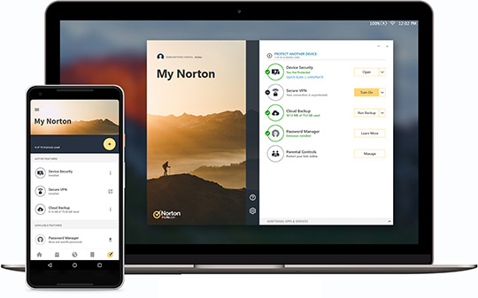

Login your account can be used to perform the following tasks:
- Activate your product
- Access your backup
- Access or create your cloud vault
- Manage your Norton subscriptions
- Reinstall Norton Login products by using your product keys stored in your account
- Buy storage to add more space for your cloud backup

Screens are simulated and subject to change.
Features may differ depending on your chosen plan.
Our Promise
100% Virus Protection Promise2
60-Day Money Back Guarantee
for annual Norton Logins*
for annual Norton Logins*

24/7 Support∆